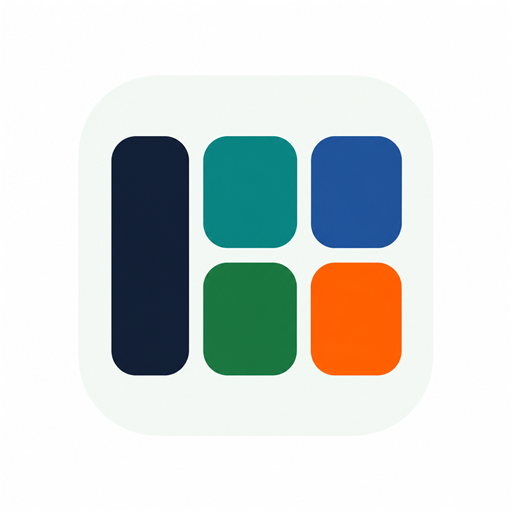
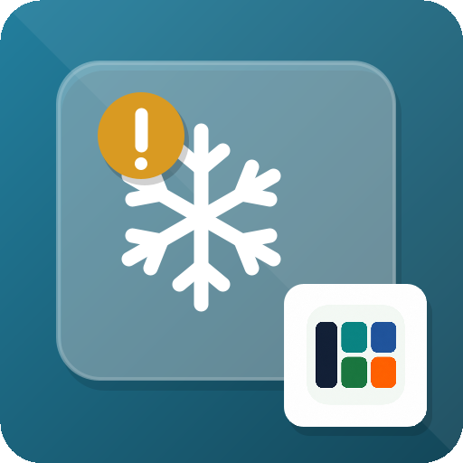

After batch cooking
Add a meal, its quantity and frozen date. Keep a note of the drawer or container. Save a template for items you freeze regularly.

1000UsefulApps
Frozen food inventory for Android
Know what is in your freezer.
See what to use first.
Keep portions, quantities and your own use-by dates in one place, from batch-cooked meals to seasonal berries.
Get it on Google PlayFree tracking. Contains ads. Optional one-time purchase removes ads.
Actual app screens with example records. Dates are entered by the user, not food-safety recommendations.
Add a meal, its quantity and frozen date. Keep a note of the drawer or container. Save a template for items you freeze regularly.
Check the items approaching the dates you set. Filter by category and see what is already there before buying more.
Mark it thawed to move it to history. An optional hourly reminder helps you remember it later. History keeps past records out of your active stock.
No. You choose each use-by date or number of days from freezing. The app organizes those dates; it does not assess food safety or recommend refreezing.
There are two options: a daily summary for items approaching or past your dates, enabled in Settings, and a one-time reminder after you mark an item thawed. Allow notifications in Android. Delivery can depend on your device settings.
No app account is required. All tracking features are free. An optional one-time Google Play purchase removes ads; it does not unlock extra tracking features.
Records are stored on your device. You can share an item or inventory as text, but the app does not synchronize a shared household inventory between phones.
Yes. Use pieces, packs, weight or volume, or enter a custom unit such as portions. Create categories to organize your own stock.
You can attach photos to your records. Inventory records are local to your device. Optional usage analytics can be controlled in Settings. See the privacy policy for Google services, advertising and data handling.